Section 2.6 — Inventory of continuous distributions#
This notebook contains all the code examples from Section 2.6 Inventory of continuous distributions of the No Bullshit Guide to Statistics.
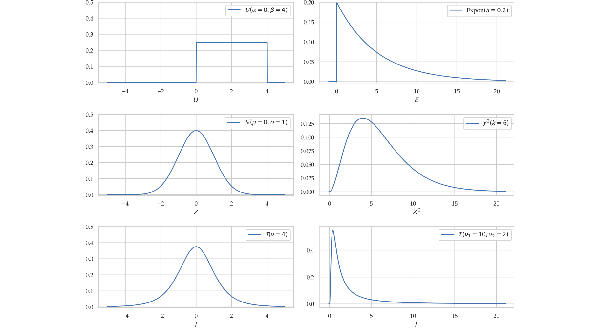
Notebook setup#
# load Python modules
import numpy as np
import pandas as pd
import seaborn as sns
import matplotlib.pyplot as plt
# Figures setup
sns.set_theme(
context="paper",
style="whitegrid",
palette="colorblind",
rc={'figure.figsize': (7,4)},
)
%config InlineBackend.figure_format = 'retina'
# set random seed for repeatability
np.random.seed(42)
# Download the `plot_helpers.py` module from the book's main github repo:
import os, requests
if not os.path.exists("plot_helpers.py"):
resp = requests.get("https://raw.githubusercontent.com/minireference/noBSstatsnotebooks/main/notebooks/plot_helpers.py")
with open("plot_helpers.py", "w") as f:
f.write(resp.text)
print("Downloaded `plot_helpers.py` module to current directory:", os.getcwd())
else:
print("You already have plot_helpers.py, so we can proceed.")
from plot_helpers import plot_pdf
from plot_helpers import plot_cdf
from plot_helpers import plot_pdf_and_cdf
You already have plot_helpers.py, so we can proceed.
Review of formulas#
Gamma function#
from scipy.special import gamma as gammaf
gammaf(1) # = 0! = 1
1.0
gammaf(2) # = 1! = 1
1.0
gammaf(3) # = 2! = 2*1
2.0
gammaf(4) # = 3! = 3*2*1
6.0
gammaf(5) # = 4! = 4*3*2*1
24.0
[gammaf(z) for z in [4, 4.1, 4.5, 4.9, 5]]
[6.0, 6.812622863016677, 11.63172839656745, 20.66738596185786, 24.0]
# plot gammaf between 0 and 5
xs = np.linspace(0.05, 5, 1000)
fXs = gammaf(xs)
ax = sns.lineplot(x=xs, y=fXs, label="$\\Gamma(z)$")
ax.set_xlabel("z")
Text(0.5, 0, 'z')
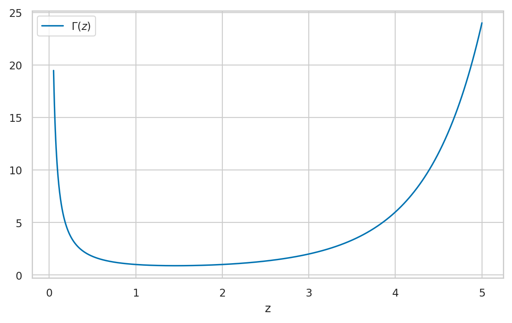
Continuous distribution reference#
Uniform distribution#
The uniform distribution \(\mathcal{U}(\alpha,\beta)\) is described by the following probability density function:
For a uniform distribution \(\mathcal{U}(\alpha,\beta)\), each \(x\) between \(\alpha\) and \(\beta\) is equally likely to occur, and values of \(x\) outside this range have zero probability of occurring.
from scipy.stats import uniform
alpha = 2
beta = 7
rvU = uniform(alpha, beta-alpha)
# draw 10 random samples from X
rvU.rvs(10)
array([3.87270059, 6.75357153, 5.65996971, 4.99329242, 2.7800932 ,
2.7799726 , 2.29041806, 6.33088073, 5.00557506, 5.54036289])
_ = plot_pdf(rvU, xlims=[0,9])
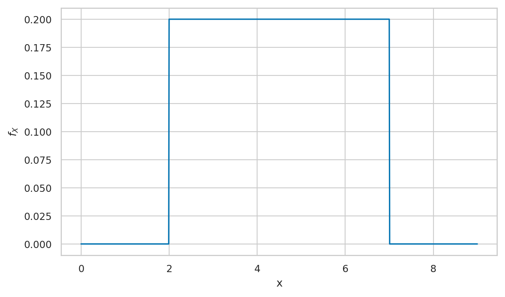
# # ALT. use sns.lineplot
# # plot the probability density function (pdf) of the random variable X
# xs = np.linspace(0, 10, 1000)
# fUs = rvU.pdf(xs)
# sns.lineplot(x=xs, y=fUs)
Cumulative distribution function#
_ = plot_pdf_and_cdf(rvU, xlims=[0,9])
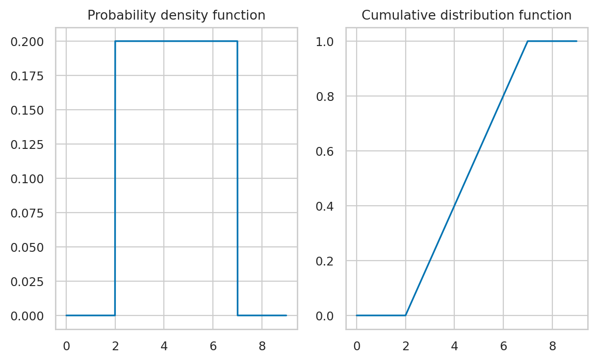
Standard uniform distribution#
The standard uniform distribution \(U_s \sim \mathcal{U}(0,1)\) is described by the following probability density function:
where \(U\) is the name of the random variable and \(u\) are particular values it can take on.
The above equation describes tells you how likely it is to observe \(\{U_s=x\}\). For a uniform distribution \(\mathcal{U}(0,1)\), each \(x\) between 0 and 1 is equally likely to occur, and values of \(x\) outside this range have zero probability of occurring.
from scipy.stats import uniform
rvUs = uniform(0, 1)
# draw 10 random samples from X
rvUs.rvs(1)
array([0.02058449])
import random
random.seed(3)
random.random()
0.23796462709189137
random.uniform(0,1)
0.5442292252959519
import numpy as np
np.random.seed(42)
np.random.rand(10)
array([0.37454012, 0.95071431, 0.73199394, 0.59865848, 0.15601864,
0.15599452, 0.05808361, 0.86617615, 0.60111501, 0.70807258])
_ = plot_pdf_and_cdf(rvUs, xlims=[-1,2])
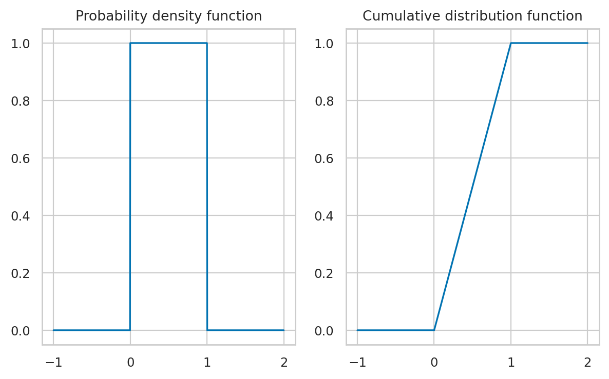
Simulating other random variables#
We can use the uniform random variable to generate random variables from other distributions.
For example,
suppose we want to generate observations of a coin toss random variable
which comes out heads 50% of the time and tails 50% of the time.
We can use the standard uniform random variables obtained from random.random()
and split the outcomes at the “halfway point” of the sample space,
to generate the 50-50 randomness of a coin toss.
The function flip_coin defined below shows how to do this:
def flip_coin():
u = random.random() # random number in [0,1]
if u < 0.5:
return "heads"
else:
return "tails"
# simulate one coin toss
flip_coin()
'heads'
# simulate 10 coin tosses
[flip_coin() for i in range(0,10)]
['tails',
'tails',
'heads',
'heads',
'tails',
'heads',
'heads',
'tails',
'heads',
'tails']
Exponential#
from scipy.stats import expon
lam = 7
loc = 0
scale = 1/lam
rvE = expon(loc, scale)
The computer model expon accepts as its first argument an optional “location” parameter,
which can shift the exponential distribution to the right,
but we want loc=0 to get the simple case,
that corresponds to the un-shifted distribution \(\textrm{Expon}(\lambda)\).
rvE.mean(), rvE.var()
(0.14285714285714285, 0.02040816326530612)
# math formulas for mean and var
1/lam, 1/lam**2
(0.14285714285714285, 0.02040816326530612)
## ALT. we can obtain mean and ver using the .stats() method
## The code below also computes the skewness and the kurtosis
# mean, var, skew, kurt = rvE.stats(moments='mvsk')
# mean, var, skew, kurt
# f_E(5) = pdf value at x=10
rvE.pdf(0.2)
1.7261787475912453
_ = plot_pdf(rvE, xlims=[0,1.1])
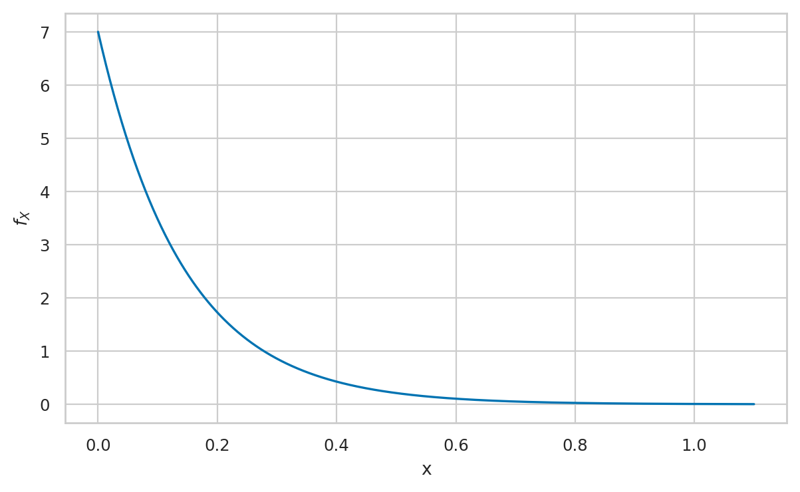
Normal#
A random variable \(N\) with a normal distribution \(\mathcal{N}(\mu,\sigma)\) is described by the probability density function:
The mean \(\mu\) and the standard deviation \(\sigma\) are called the parameters of the distribution. The math notation \(\mathcal{N}(\mu, \sigma)\) is used to describe the whole family of normal probability distributions.
from scipy.stats import norm
mu = 10 # = 𝜇 where is the centre?
sigma = 3 # = 𝜎 how spread out is it?
rvN = norm(mu, sigma)
rvN.mean(), rvN.var()
(10.0, 9.0)
_ = plot_pdf(rvN, xlims=[-10,30])
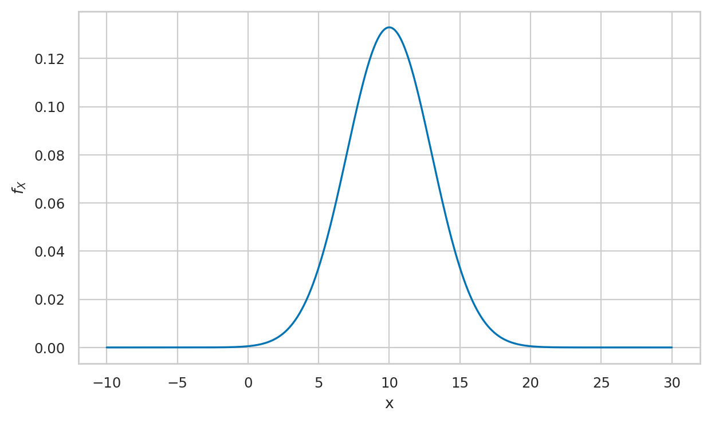
# ALT. generate the plot manually
# create a normal random variable
from scipy.stats import norm
mean = 1000 # 𝜇 (mu) = where is its center?
std = 100 # 𝜎 (sigma) = how spread out is it?
rvN = norm(mean, std)
# plot its probability density function (pdf)
xs = np.linspace(300, 1700, 1000)
ys = rvN.pdf(xs)
ax = sns.lineplot(x=xs, y=ys)
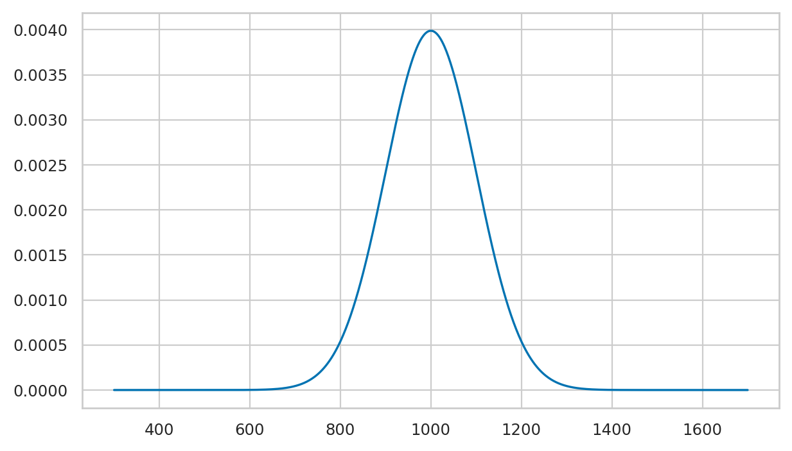
Standard normal#
A standard normal is denoted \(Z\) with a normal distribution \(\mathcal{N}(\mu=0,\sigma=1)\) and described by the probability density function:
from scipy.stats import norm
rvZ = norm(0,1)
rvZ.mean(), rvZ.var()
(0.0, 1.0)
fig, ax = plt.subplots()
plot_pdf(rvZ, xlims=[-4,4], ax=ax, rv_name="Z")
<Axes: xlabel='z', ylabel='$f_{Z}$'>
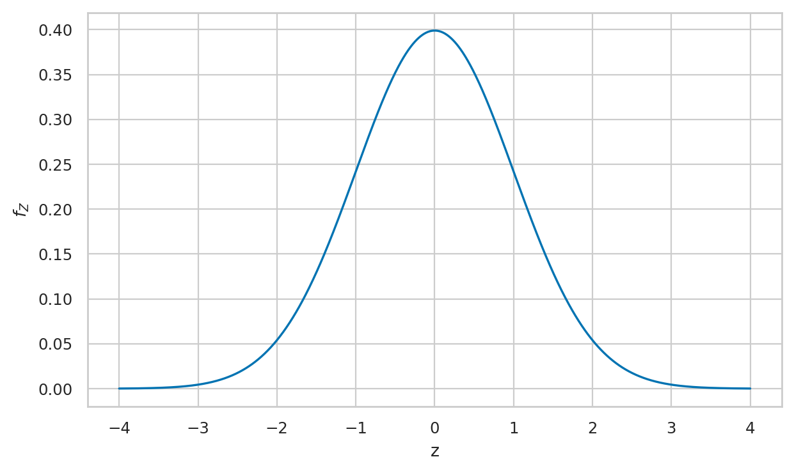
Cumulative probabilities in the tails#
Probability of \(Z\) being smaller than \(-2.2\).
rvZ.cdf(-2.3)
0.010724110021675809
Probability of \(Z\) being greater than \(2.2\).
1 - rvZ.cdf(2.3)
0.010724110021675837
Probability of \(|Z| > 2.2\).
rvZ.cdf(-2.3) + (1-rvZ.cdf(2.3))
0.021448220043351646
norm.cdf(-2.3,0,1) + (1-norm.cdf(2.3,0,1))
0.021448220043351646
Inverse cumulative distribution calculations#
rvZ.ppf(0.05)
-1.6448536269514729
rvZ.ppf(0.95)
1.6448536269514722
rvZ.interval(0.9)
(-1.6448536269514729, 1.6448536269514722)
Student’s \(t\)-distribution#
This is a generalization of the standard normal with “heavy” tails.
from scipy.stats import t
df = 10
rvT = t(df)
ax = plot_pdf(rvT, xlims=[-5,5], label=f"t({df})")
_ = plot_pdf(rvZ, xlims=[-5,5], ax=ax, label="Z")
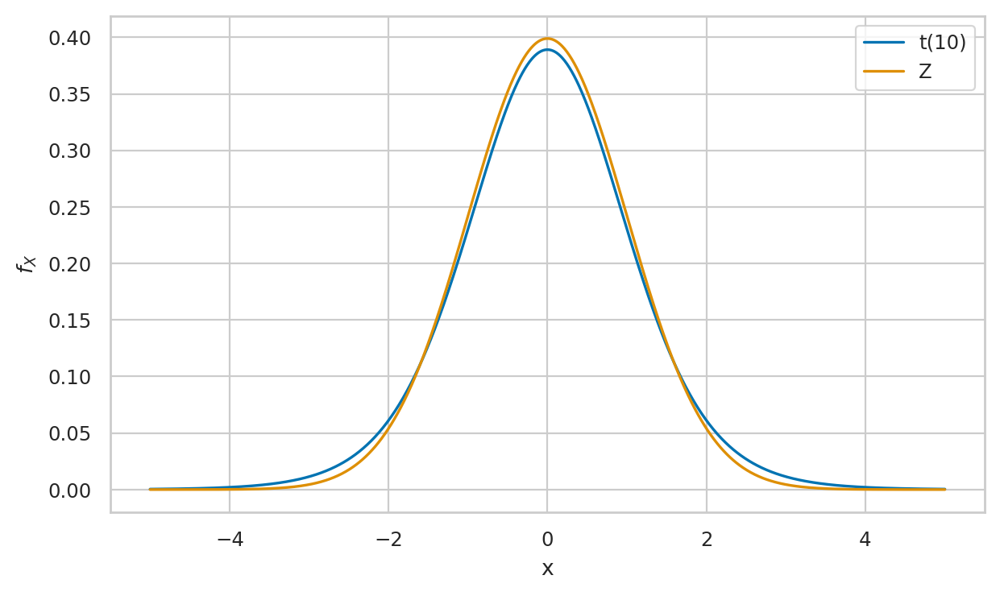
rvT.mean(), rvT.var()
(0.0, 1.25)
# Kurtosis formula kurt(rvT) = 6/(df-4) for df>4
rvT.stats("k")
1.0
rvT.cdf(-2.3)
0.022127156642143552
rvT.ppf(0.05), rvT.ppf(0.95)
(-1.8124611228107341, 1.8124611228107335)
fig, ax = plt.subplots()
linestyles = ['solid', 'dashdot', 'dashed', 'dotted']
for i, df in enumerate([2,5,10,100]):
rvT = t(df)
linestyle = linestyles[i]
plot_pdf(rvT, xlims=[-5,5], ax=ax, label="$\\nu={}$".format(df), linestyle=linestyle)
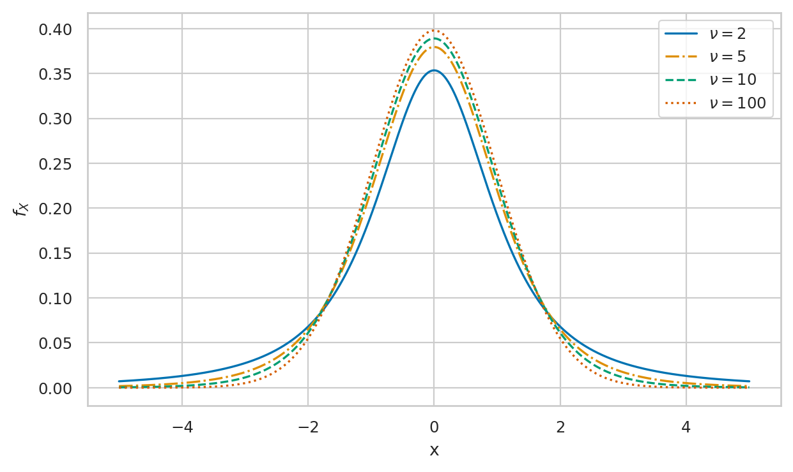
Snedecor’s \(F\)-distribution#
from scipy.stats import f
df1, df2 = 15, 10
rvF = f(df1, df2)
rvF.mean(), rvF.var()
(1.25, 0.7986111111111112)
_ = plot_pdf(rvF, xlims=[0,5])
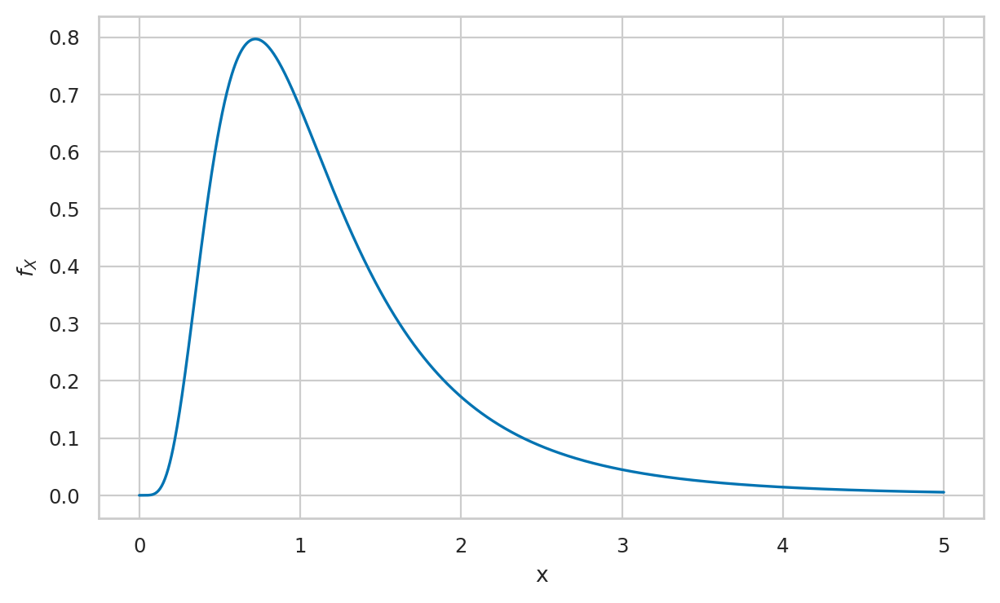
Chi-squared distribution#
from scipy.stats import chi2
k = 10
rvX2 = chi2(k)
rvX2.mean(), rvX2.var()
(10.0, 20.0)
1 - rvX2.cdf(20)
0.02925268807696113
_ = plot_pdf(rvX2, xlims=[0,40])
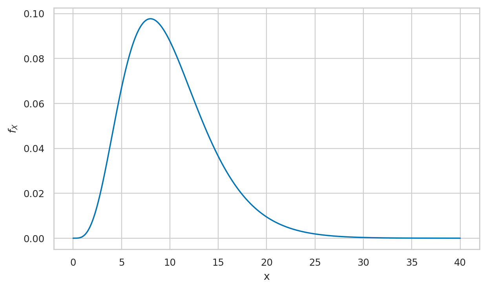
Gamma (optional)#
https://en.wikipedia.org/wiki/Gamma_distribution
https://docs.scipy.org/doc/scipy/reference/generated/scipy.stats.gamma.html
from scipy.stats import gamma as gammad
alpha = 4
loc = 0
lam = 2
beta = 1/lam
rvG = gammad(alpha, loc, beta)
rvG.mean(), rvG.var()
(2.0, 1.0)
_ = plot_pdf(rvG, xlims=[0,5])
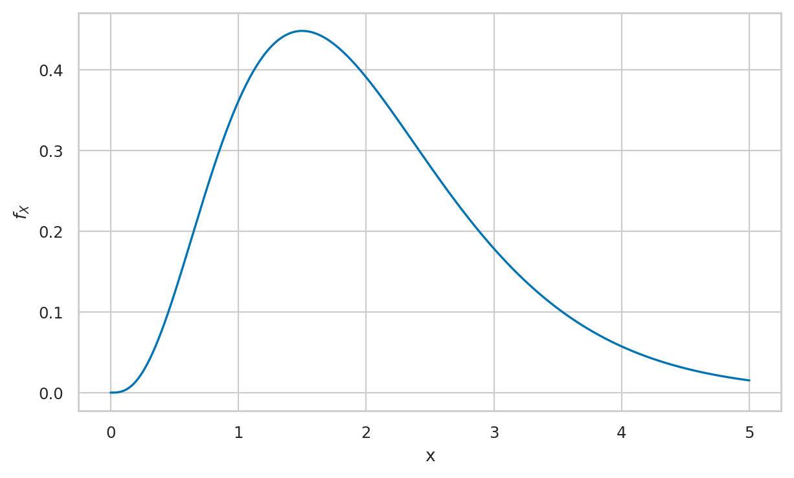
Beta (optional)#
from scipy.stats import beta as betad
alpha = 3
beta = 7
rvB = betad(alpha, beta)
rvB.mean(), rvB.var()
(0.3, 0.019090909090909092)
_ = plot_pdf(rvB, xlims=[0,1])
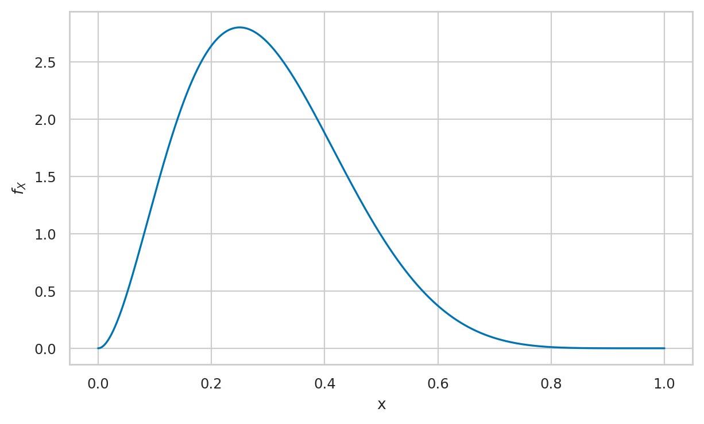
Cauchy (optional)#
from scipy.stats import cauchy
x0 = 3
gamma = 5
rvC = cauchy(x0, gamma)
rvC.mean(), rvC.var()
(nan, nan)
_ = plot_pdf(rvC, xlims=[-40,40])
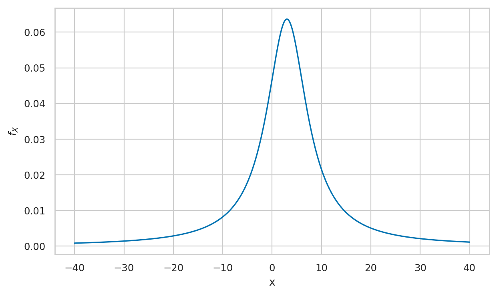